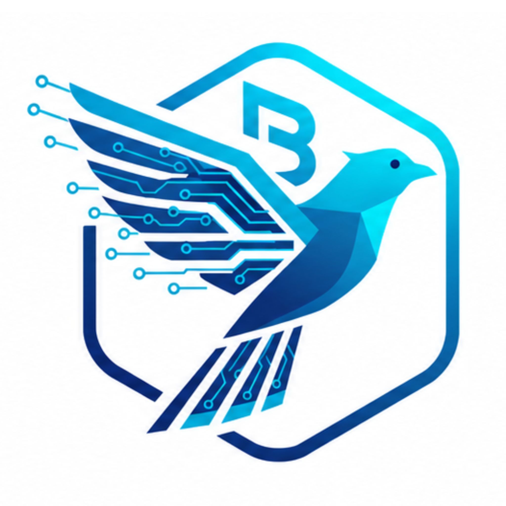

Balvion Workshop Project
Follow Balvion on Instagram, then access the workshop project code.
You can download the project or clone it and open it in VS Code.

Follow Balvion on Instagram, then access the workshop project code.
You can download the project or clone it and open it in VS Code.